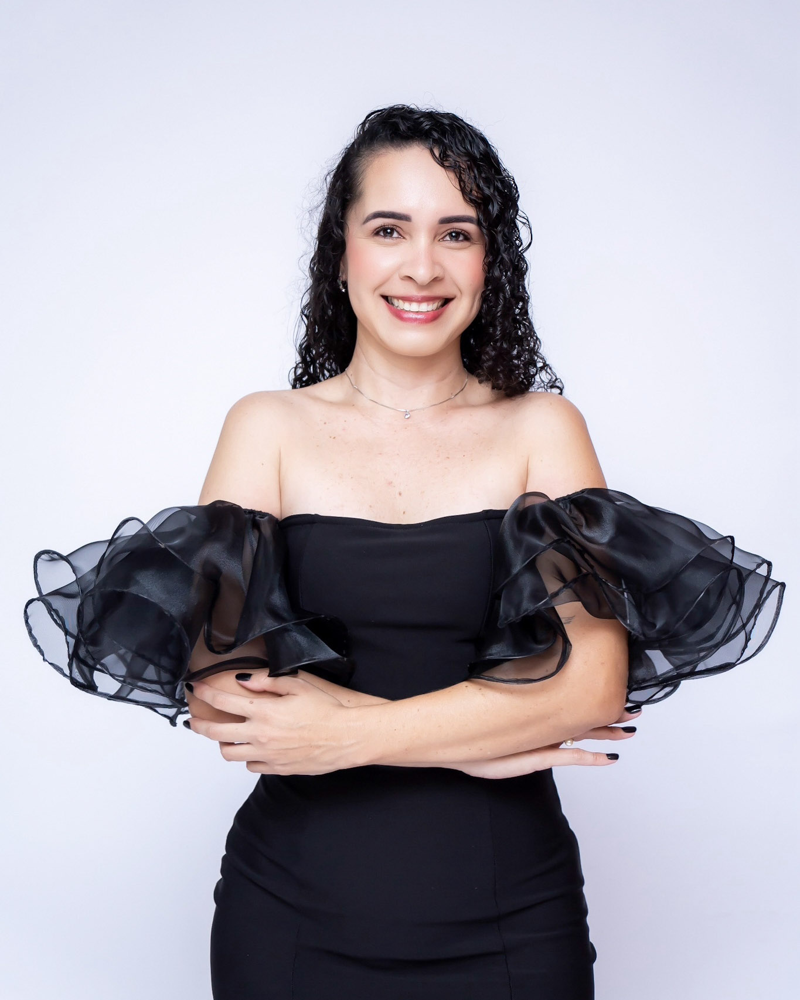
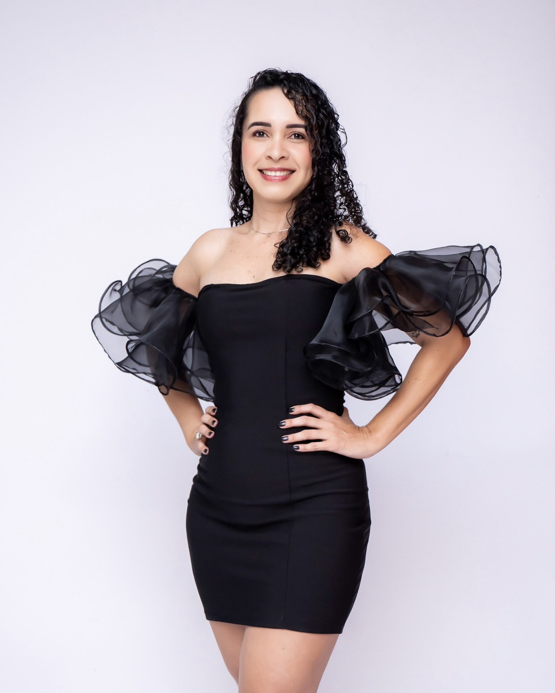
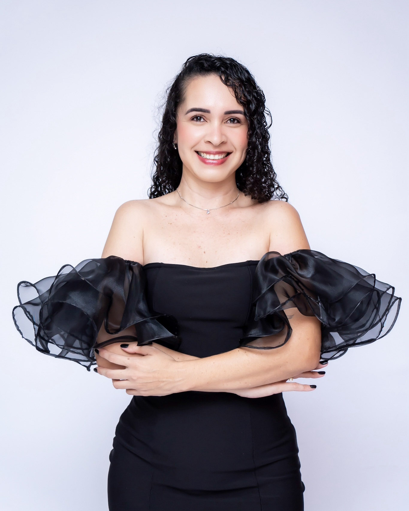
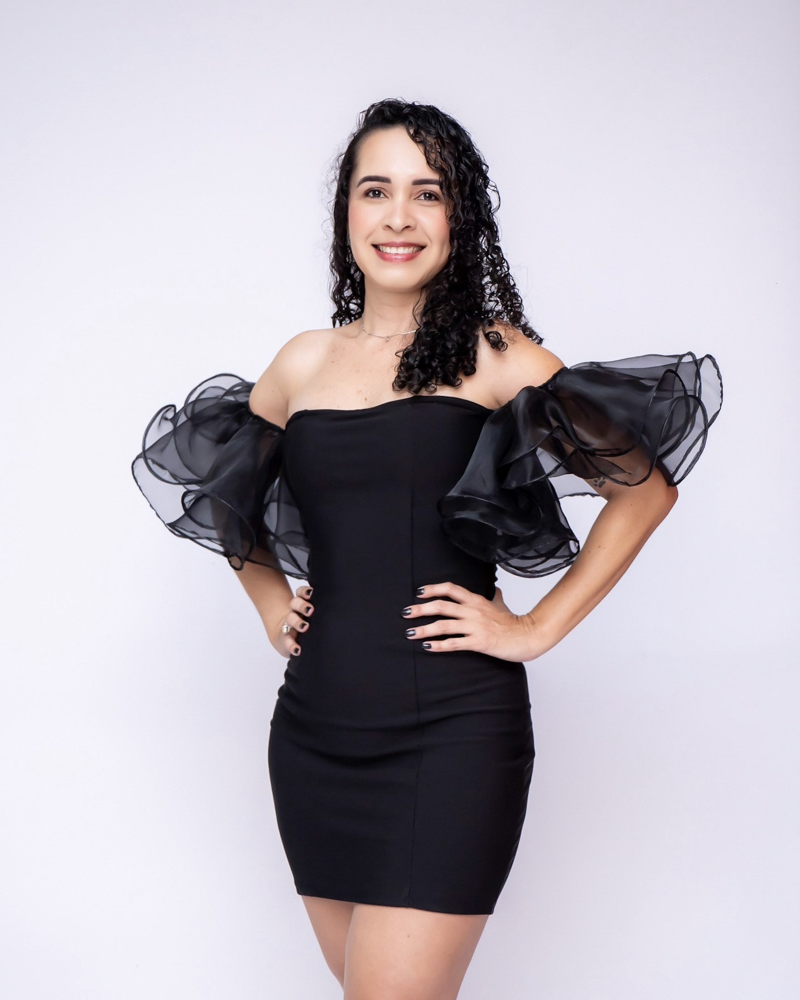

aniversário estúdio | leizi
O aniversário de 40 anos da Leiziane foi comemorado em grande estilo, no aconchego do seu próprio lar. A escolha do seu domicílio trouxe ainda mais comodidade e proximidade, tornando a celebração íntima, especial e cheia de significado para todos os que estavam presentes.
Para a INTS Fotografia, foi uma alegria imensa poder registrar cada detalhe dessa data tão marcante. Leiziane se encantou com o nosso trabalho, valorizou nossa atenção em cada momento e expressou todo o seu carinho ao ver o resultado final das fotos.
Participar de um momento tão único e importante na vida dela nos encheu de felicidade e gratidão. É em ocasiões assim que reafirmamos o quanto amamos o que fazemos e o privilégio que é eternizar memórias que ficarão guardadas para sempre.
Desejamos à Leiziane muitos anos de vida, saúde, alegrias e conquistas. Que cada novo ciclo seja repleto de momentos inesquecíveis. E sempre que ela quiser, pode contar conosco para registrar histórias e transformar lembranças em eternidade.
 


